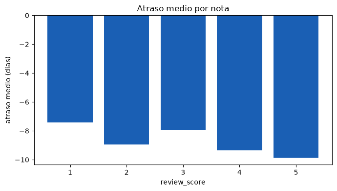
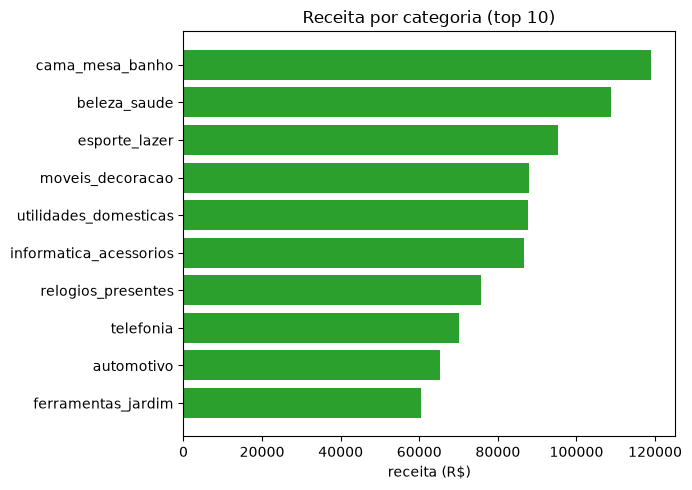
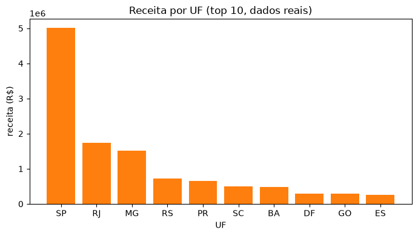
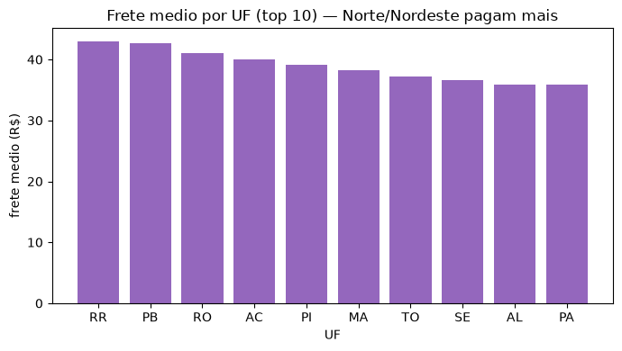
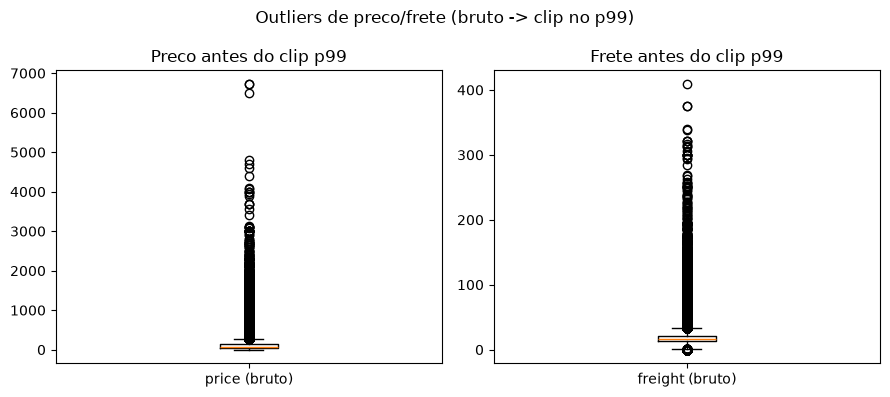
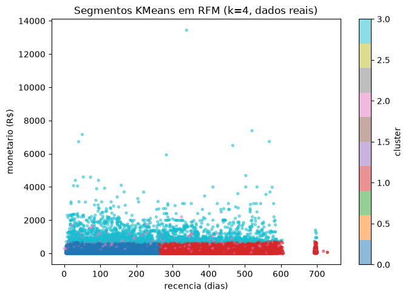
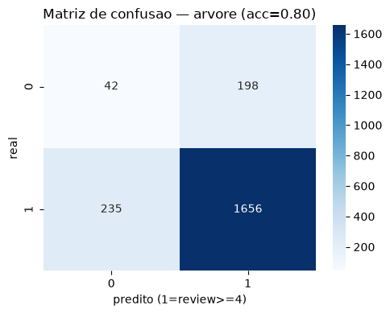

E-commerce brasileiro (Olist): segmentação e padrões de compra
Aviso — dados sintéticos ilustrativos: sem credencial Kaggle neste ambiente,
esta análise usa dados sintéticos realistas (seed 42) com o esquema da coleção Olist;
os resultados são ilustrativos, não do dataset real. Fonte real:
kaggle datasets download olistbr/brazilian-ecommerce — com credenciais,
baixe os 9 CSVs para data/ e reexecute
notebooks/01_ecommerce.ipynb para regenerar tudo com dados reais.
Amostra de 200 linhas em sample_olist.csv.
1. Entendimento dos dados
A coleção Olist cobre pedidos, itens, clientes, produtos, avaliações, pagamentos,
vendedores, geolocalização e tradução de categorias (tabela gerada com
df_to_html_table no notebook):
| arquivo | conteudo |
|---|---|
| olist_orders_dataset.csv | pedidos: status, timestamps de compra/aprovacao/entrega |
| olist_order_items_dataset.csv | itens: preco, frete, vendedor por pedido/produto |
| olist_customers_dataset.csv | clientes: id, cidade/UF, geolocalizacao |
| olist_products_dataset.csv | produtos: categoria, dimensoes, peso |
| olist_order_reviews_dataset.csv | avaliacoes: review_score 1-5, titulo/comentario |
| olist_order_payments_dataset.csv | pagamentos: tipo, parcelas, valor |
| olist_sellers_dataset.csv | vendedores: cidade/UF |
| olist_geolocation_dataset.csv | geolocalizacao: CEP/lat-lng por cidade |
| product_category_name_translation.csv | traducao categoria PT-BR -> EN |
2. Preparação
Join de orders + order_items + customers (6000 pedidos,
7337 itens). Nulos de order_delivered_customer_date e
order_delivered_carrier_date (~3%, pedidos cancelados/indisponíveis)
foram sinalizados com flag e excluídos do cálculo de atraso. Outliers de
preço e frete (regra IQR) foram contidos com clip no percentil 99.
| order_id | customer_state | product_category_name | price | freight_value | delay_days | review_score |
|---|---|---|---|---|---|---|
| o00000 | SP | automotivo | 96.69 | 17.07 | -24.0 | 3.0 |
| o00001 | PR | beleza_saude | 68.74 | 7.11 | -22.0 | 5.0 |
| o00002 | PA | ferramentas_jardim | 182.72 | 38.81 | -11.0 | 5.0 |
| o00003 | RJ | ferramentas_jardim | 355.98 | 15.59 | -1.0 | 4.0 |
| o00004 | RJ | moveis_decoracao | 144.87 | 7.70 | -23.0 | 5.0 |
| o00005 | SP | utilidades_domesticas | 173.77 | 18.45 | -4.0 | 5.0 |
| o00006 | SP | moveis_decoracao | 109.16 | 15.56 | -5.0 | 5.0 |
| o00007 | SP | papelaria | 149.93 | 3.00 | -21.0 | 5.0 |
| o00007 | SP | relogios_presentes | 100.94 | 8.36 | -21.0 | 5.0 |
| o00007 | SP | perfumaria | 40.36 | 18.08 | -21.0 | 5.0 |
3. EDA
O atraso médio cresce nas notas baixas de review_score, confirmando
que pontualidade dirige a satisfação. As categorias de maior receita são cama_mesa_banho, beleza_saude, esporte_lazer;
SP concentra a receita por UF e o frete cresce com a distância aproximada do CD (por UF).





4. Mineração
Segmentação (KMeans, k=4 sobre RFM). O algoritmo KMeans agrupou os clientes em 4 segmentos a partir de recência, frequência e valor monetário. Perfil médio por cluster:
| cluster | recency | frequency | monetary | n_clientes |
|---|---|---|---|---|
| 0 | 420.23 | 1.24 | 194.68 | 1006 |
| 1 | 151.58 | 2.57 | 476.00 | 837 |
| 2 | 121.42 | 3.75 | 972.69 | 295 |
| 3 | 132.18 | 1.39 | 160.83 | 1076 |

Classificação (árvore de decisão). A árvore prevê review_score >= 4
a partir de atraso, frete, preço, razão frete/preço, nº de itens e flag de atraso
(atributos mais importantes: price, freight_value, freight_ratio). A matriz de confusão no teste (acurácia 0.80):
| pred 0 | pred 1 | |
|---|---|---|
| real 0 (<=3) | 42 | 198 |
| real 1 (>=4) | 235 | 1656 |

Associação. Co-ocorrência de categorias em pedidos com 2+ itens (top pares):
| cat_a | cat_b | n_pedidos |
|---|---|---|
| beleza_saude | cama_mesa_banho | 42 |
| cama_mesa_banho | relogios_presentes | 37 |
| beleza_saude | esporte_lazer | 36 |
| cama_mesa_banho | utilidades_domesticas | 33 |
| cama_mesa_banho | esporte_lazer | 32 |
| cama_mesa_banho | informatica_acessorios | 31 |
| cama_mesa_banho | moveis_decoracao | 29 |
| beleza_saude | utilidades_domesticas | 28 |
| esporte_lazer | utilidades_domesticas | 27 |
| beleza_saude | telefonia | 27 |
Painel interativo — explore, visualize, simule
Todas as tabelas da página também ganham busca própria e ordenação por clique no cabeçalho.
Gráficos vivos (requer internet — CDN Plotly; sem internet, veja as figuras estáticas)
Simulador SAD — tolerância ao atraso
E se a operação tolerar no máximo dias de atraso?
Carregando…
5. Apoio à decisão — recomendações
- Recomenda-se reforçar o CD do Sudeste: se o atraso > 7 dias derruba a nota, então priorizar estoque regional nas UFs de maior receita reduz o atraso e protege o review.
- Recomenda-se fidelizar o cluster de alto valor: se o KMeans isola clientes de alta frequência/monetário, então oferecer frete grátis progressivo a esse segmento aumenta a recompra.
- Recomenda-se rever a tabela de frete de longa distância: se frete/preço alto prediz nota baixa na árvore, então subsidiar o frete acima de 1500 km preserva a satisfação.
- Recomenda-se bundle das categorias co-ocorrentes: se pares de categorias aparecem juntos com frequência, então criar kits com desconto eleva o ticket médio.